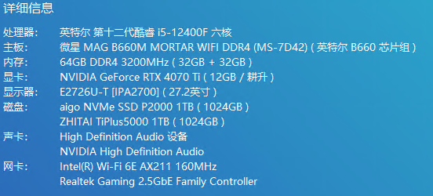
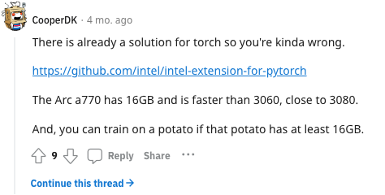
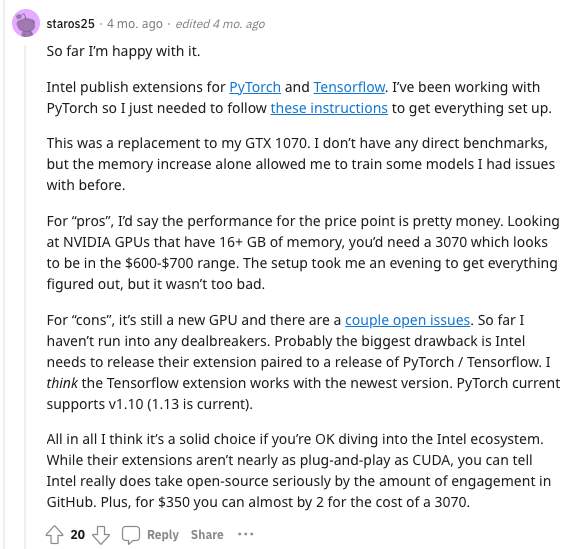
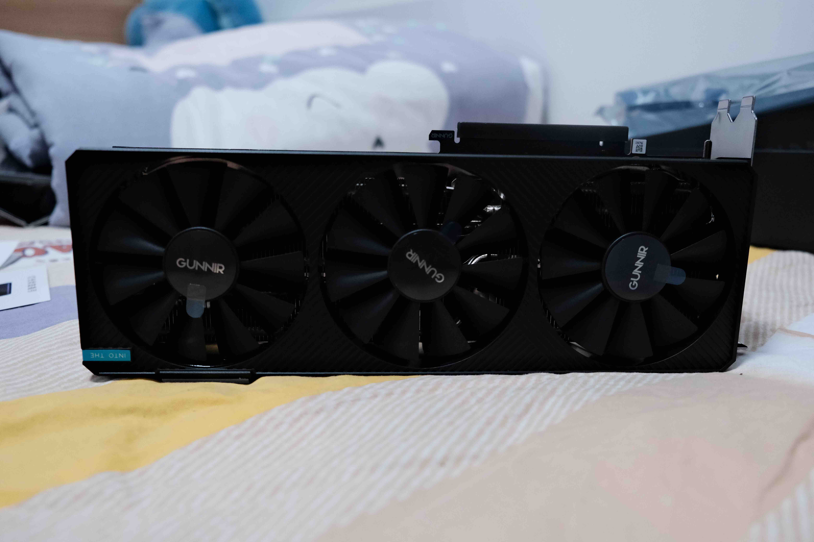
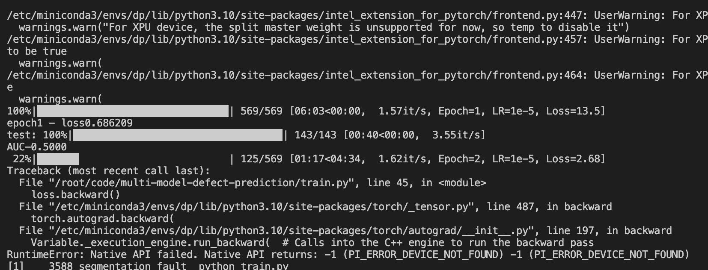
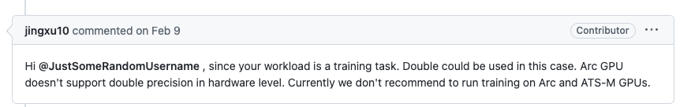
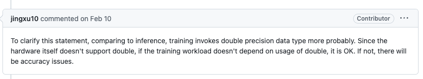

一台学习用台式电脑的组装记录
最终配置

为什么要配电脑呢
研究生期间的课题是深度学习方向的, 苦于手头没有GPU计算资源, 而现阶段autodl上租卡也是一卡难求, 一直想搞一台拿来跑深度学习的机器. 自己手头用的是M1 MacBook Pro, 正儿八经搞深度学习还是不太现实的.
CPU
最开始是在学校二手群看到有出i5 12400F 配 七彩虹B660M 二手价格1300, 上电商平台搜了下, 觉得价格可以接受, 就买了下来. 我需要干的也没有什么需要高性能CPU的, 所以应该够用.
主板
只可惜作为一个年轻人, 总是有那么一点点自己的梦想, 比如RGB. 和12400F一起收来的七彩虹板子并没有ARGB或者RGB的接口, 那怎么办呢? ARGB控制器, 长这样:
然后在最初版本的配置下, 实现了这样的效果:

不过最后还是觉得板子有点丐, 换了微星B660M迫击炮, 事实证明这也是个错误, 想让灯光好看些, 还得是华硕), 3月10号买板子的时候, ROG的B760小吹雪刚上市, 1399, 自己当时因为价格原因还是选择了B660迫击炮.
内存
穷人, 而且自认为DDR5相较于DDR4没有可以感知到的提升,
所以就买了外号高级废料厂光威的两条32G的DDR4, 组个64G,
凑合用吧.
SSD
一条21年底买的爱国者399元 1T, 还有一条致态的TiPlus5000 1T. 谢谢长江存储能让我用上这么便宜的固态, 在此ღ( ´･ᴗ･` )比心.
一波三折的显卡
先说都用了啥卡, 京东购买 镭风 3060 12G -> 京东购买
蓝戟 A770 Photon 16G ->
天猫耕升官方店4070Ti 追风 EX.
镭风3060 12G
最早开始是在京东上买了镭风的3060 12G, 长这个样:

就还说的过去, 关键是这货还有12G显存, 拿来跑模型应该是这个价位比较好的选择了, 当然不怕矿的话可以去买2080Ti(甚至还有魔改22G显存的版本).
就在我以为装机到此为止的时候, 我发现这台电脑开机的时候总是有比较大的概率(40%左右), 屏幕不亮, 但是电脑可以通过远程桌面连接上, 且设备管理器里没有这张显卡. 刚开始因为是显卡没插稳的原因, 就拆了机重新收拾了一下. 然而并没有彻底解决这个问题, 最后选择了京东售后, 售后的处理结果还挺让我意外, 我可以选择换货或者退货.
蓝戟 A770 16G Photon
在3060售后的10天里, 偶尔间刷到了Intel去年推得独显Arc A770和A750, 本着对3060和黄狗40系定价不当人很不满意的心态, 当京东问我怎么处理3060的时候, 我选择了退货, 下单了蓝戟的A770 16G Photon.
当然陪这台机器的目的还是为了跑PyTorch, 所以在买A770之前, 我还是做了一些资料搜索, 了解A770运行PyTorch的一些能力.
我在Reddit找了一些帖子, 大概了解到一些人已经开始在用A770做一些深度学习的工作了. 例如:
Does anyone uses Intel Arc A770 GPU for machine learning? [D]
看到了一些这种说法, 介绍Intel Extension For PyTorch框架:


而且我还找到了使用A770来运行Stable Diffusion的教程, 例如:
甚至第二个链接指向的还是Intel的官网. 根据搜到的这些资料, 我自认为A770值得一试, 可以冲一把.
下面是一些A770开箱拍的图片:





装好之后, 机箱看起来是这样的:

看起来就也还行.
按照IPEX(Intel Extension For PyTorch)的文档配好了IPEX环境, 下面就要开始试验PyTorch训练模型方面的性能了. 刚开始觉得挺不错, 这么大显存跑模型岂不美滋滋. 直到我看见了这个报错:

当时看到这个的时候, 心态有点略微爆炸. 首先, 第一个Epoch下来, 模型的AUC还是0.5, 证明模型还是在瞎猜, 应该没有完成反向传播. 其二, 第二个Epoch直接跑不完了, Segmentation Fault.
去IPEX的Github的Issues里面搜了一下, 在这个Issue下面看到了这个:


其中这位jingxu10应该是Intel这个框架的工作人员,
这个框架下的许多Issue页面下都有此人的身影. 反正就是拿来进行推理,
像Stable Diffusion那样, 完全ok, 没问题, 但要是训练模型的话,
Intel自己的人都说不推荐, 那我还是算了. 借着A770高负载下啸叫的问题,
在京东上进行了退货.
虽然但是, Intel的态度还是非常不错的, IPEX这个框架的版本更新频率, 以及人员回复Issue的速度, 都远超微软DirectML加速框架; 而且这块卡拿来打游戏(游戏越新, 体验越好), 剪视频都是很不错的选择, 只是不适合我(和深度学习), B站上有许许多多Intel发布一个新版本驱动就能将游戏帧数往上明显提升的视频. 如果为了3A游戏, 这张卡值得购买.
耕升 4070Ti 追风 EX
这张卡其实没什么好说的, 就是我不想买30系的矿, 又想用CUDA(最终还是向黄狗低下头了捏), 还想稍微省些钱的选择. 选择耕升这块卡的原因有二, 其一是有外接ARGB, 可以通过线和主板神光同步; 其二能个人送保.
没拍什么开箱照片, 只是拿手机录了一个非常简单的开箱视频(就真的只是开箱):
装好的效果:

一切按照CUDA on WSL User Guide和Start Locally | PyTorch说明进行操作, 装完PyTorch就能使用CUDA加速了.
其实这张卡的选择也不是很好, 12G显存, 我自己的模型里面把预训练模型的部分的网络微调一下, 显存就爆了, 应该找一些24G显存的卡来装才对.
THE END
跑分什么的就不跑了, 感觉对我没有太大意义. 以后这台电脑有变动的话再补充下.
一台学习用台式电脑的组装记录